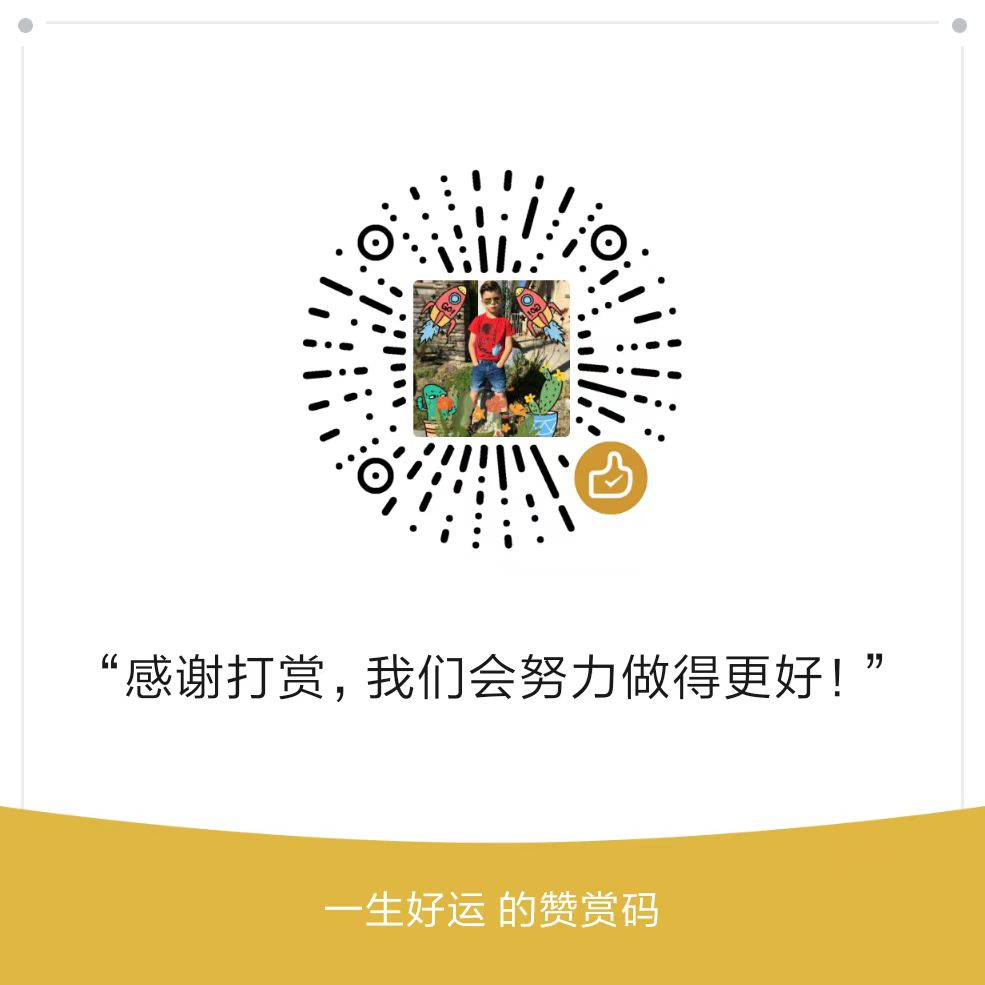
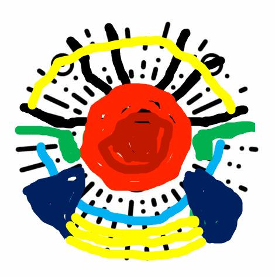

WeiQin
应届毕业生 / 广州大学
基本信息
- xxx / 男 / 22岁
- xxxx / xx / xx
- CET-4
联系方式
技能点
技术栈
- HTML、CSS、Sass、Less、JavaScript、Vue.js、微信小程序、Bootstrap、jQuery、React
- Node.js、PHP、MySQL
- Git、Markdown、Webpack、npm、Visual Studio Code
二维码

教育经历
-
广州大学（本科） - 理工
专业排名 专业前20%，期间曾获得班内绩点排名第二。
个人技能
-
HTML/CSS：
- 掌握DIV+CSS布局以及HTML5/CSS3新特性，并能使用其实现动画效果、准确还原设计图和开发符合W3C规范的页面；
- 熟悉百分比布局，Flex布局，rem布局，vw/vh布局和响应式布局，能熟练使用Sass与Less预编译器进行项目开发。
-
JavaScript：
- 掌握原生JavaScript操作DOM和BOM，掌握重要概念如面向对象、继承、原型链、闭包、作用域链和事件循环等；
- 熟练运用ajax、jsonp处理前后端数据交互，并能使用模板引擎进行前端渲染；
- 熟悉ES6+的新特性；
-
框架/库/插件：
- 熟悉主流框架Vue.js及其周边工具如Vue-Cli、Vue Router、Vuex、Axios、Vant和Element；
- 熟悉数据可视化框架，如能使用ECharts插件制作可视化图表；
- 了解Bootstrap框架、了解jQuery库、了解React框架；
-
项目工具：
- 掌握Git分布式版本控制工具；
- 熟悉Node.js开放平台，能用其实现服务端功能，了解Express和Koa2框架；
- 熟悉包依赖管理工具npm；
- 了解自动化构建工具Webpack；
-
其它：
- 掌握微信小程序开发以及微信公众号开发；
- 了解WebSocket协议、了解PHP后端语言、了解MySQL数据库。
个人项目
-
[项目1] github个人数据可视化平台（pc） 项目展示
- 技术栈： Vue + Vue Router + Axios + DataV组件库 + v-charts图表组件库
-
【介绍】 一个使用 vue 结合 v-charts 和 datav 实现的可视化界面数据展示项目，其所有的接口来源，来自
GitHub中提供的数据信息，该项目能为用户提供良好的个人数据展示体验。
【开源项目】 zweiqin（该项目由本人独立完成）
[描述] ● 实现功能：用户登录以及展示个人信息、公开仓库数、粉丝数、仓库 Stars 详情、仓库语言分类、最近操作记录等等；
• 基于Vue-cli 进行Vue项目的构建，使用git进行代码版本管理；
• 使用vue-router实现页面跳转和路由拦截；
• 对各种功能进行组件封装，简化了代码结构，提高了代码质量；
• 改造了一些功能插件，如vue-particles，提高了开发速度；
[效果] 页面特效炫酷，疏密有致
-
[项目2] xxx微信小程序（移动端） 项目展示
- 技术栈： 小程序原生 + 云开发 + 云数据库 + Vant组件库
-
【介绍】
一个基于微信小程序的闲置物品（商品）交易平台，其主要功能有，用户可自行发布自己的商品，发布后的商品会在首页展示，用户也可以对商品进行删除、更新、取消交易和完成交易等操作，且用户可以与买家或卖家进行聊天。
【开源项目】 zweiqin（该项目由本人独立完成）
[描述] ● 页面有开始页、商城首页、商品详情页、搜索页、发布商品页、我的页面、登录页、修改资料页、我的发布页（含详情）、我的购买页（含详情）、消息页、聊天页、赞赏码页、用户手册页、文章页、帮助页、客服页和打赏页，共计20个页面；
• 使用Flex布局完成大部分页面的搭建；
• 对项目进行优化，美化页面的 UI 显示效果；
• 抽离出多个公共组件，并封装到项目组件库中；
• 抽离业务逻辑到单独的文件中，提升了代码的可维护性；
• 创建了9个云函数实现业务需求，使用了tcb-router工具实现了云函数路由优化；
[效果] 该小程序的完成，解决了人们的闲置物品的交易问题
获奖情况
-
第十六届学术科技之网页设计大赛校二等奖
-
广州大学综合奖学金三等奖校三等奖
自我评价
● “业精于勤，行成于思”是我给自己总结的“八字箴言”，用以每时每刻地鞭策自己：事业由于勤奋而专精，做事情成功是因为自己多思考。
• 本人具有良好的敬业精神，工作认真踏实，有上进心和责任心，能够吃苦耐劳；
• 品德端正，善于沟遇，善于思考问题，具有较强的时间观念和较强的团队合作精神；
• 热爱IT行业，对前端开发具有浓厚的兴趣，能承受较大的工作压力。